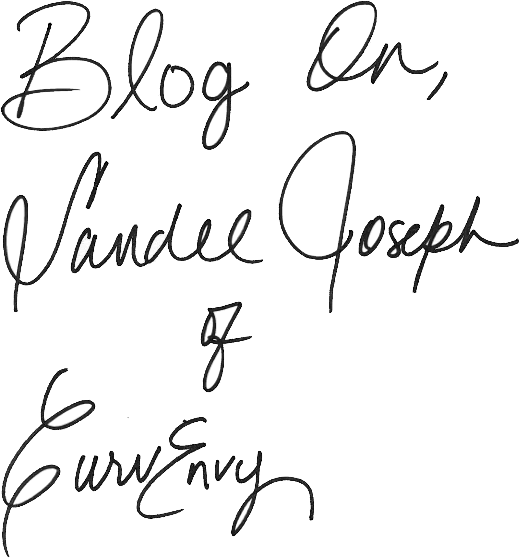

CurvEnvy by Sandee Joseph
Sandee Joseph of CurvEnvy has created a haven where fashion is not just for the skinny. As a style blogger, DIY enthusiast, and expert thrifter, she is ready to share her carefully curated wardrobe with the world. With a background in fashion public relations, having worked with designers such as Norma Kamali and Badgley Mischka, Sandee’s knowledge comes from a fashionable place. Learn more about her and her blogging journey through Blogspotter.
Why was it important to create a place “where style is not just for the skinny”? I come from a fashion public relations background having worked for designers like Norma Kamali, Badgley Mischka and the like. While there, co-workers seemed surprised on how “stylish” I was considering I was plus size. I just thought it was prosperous to think that because my dress size is double digits that would mean that I have less style than my slimmer colleagues. Hence, my motto “style is not just for the skinny” was born.
When you started CurvEnvy, what did you have in mind? I initially began CurvEnvy as an extension of my YoutTube channel. My subscribers suggested time and time again to start a blog as a way of getting more fashion tips out to them on a more consistence basis. For those unaware, editing and uploading videos is quite time consuming. At that time, I didn’t even know what a blog was. I took a year or so researching and thinking of a name and on March 3rd 2011, CurvEnvy.com was created.
How long have you been blogging? I started CurvEnvy three years ago this month.
How did you choose a name, color scheme and graphics for your blog? I knew I wanted the word curves in the blog name and brainstormed for months. I have a borderline obsession for 50s women fashion which, to me, was the epitome of womanly curves thanks to braziers, and girdles. One night, while watching Mad Men, I remember telling my cousin something like, “how can any woman not be envious of those curves.” My cousin replied “I sure have curves envy.” Eureka! In terms of the color scheme; I’ve always been fond of the color grey and added pink as the ultimate ode to girl power.
Do you feel that blogging serves as a creative outlet? Once I began to really dive into it, I came to realize that blogging fed my soul while my 9-5 (career) paid the bills. Blogging has allowed me to become more open to change and people. I have an underlying need to help people so if my blog can help revive or develop a woman’s confidence, I’ve done my job.
How important is social media in your blogging process? I was quite hesitant to start a twitter and Instagram. It took me a while to do so and now, I can’t imagine blogging without it. This mode of communication has allowed me to have a more personal one on one relationship with my readers. They’re able to bounce questions off me and I can hear their needs and wants directly. Not to mention, I’ve gained readers and found other bloggers whose style I admire thanks to social networking.
Give us a brief description of your personal style? My style is classic and uberfeminine with a dash of trend and a sprinkle of vintage. I love the juxtaposition of hard and soft plus adding an unexpected throwback element. My style is almost like writing an essay: Makeup and hair are the introduction, my wardrobe is the body and my shoes are the conclusion.
"Find out your niche, reach out to current bloggers for advice, research, map it out before launching." — Sandee Joseph
What are your favorite colors and patterns to wear? Lately, Ive been loving pink and neutrals. However, my wardrobe is a color wheel. In reality, my favorite color is white. There’s just something clean cut and crisp about that shade in everything from blouse to slacks. As much as I love color, I love patterns. My favorite has got to be cheetah print. A close second, geometric shapes and polka dots.
What item(s) in your wardrobe could you never live without? I can’t live without my Spanx, which for me, is a building block for a solid foundation.
How do you decide which outfits are worthy of posting? The majority of my outfit posts are shot during my lunch break at work. My selections depend on how Im feeling that day. You know the saying ‘life is a stage’? Well, I like to think of my wardrobe as the costume closet. I can change my ‘character’ with each ensemble-it’s just a matter of who I want to be on that given morning. Sometimes I want to be trendy and dress accordingly, other times I want to look professional and handful of times, super feminine.
Basics with bold accessories, or standout pieces with dainty jewelry? I’m totally a basics with bold accessories type of girl. Nothing like a plain t-shirt and awesome statement necklace for an understated yet chic look!
Have you always been interested in fashion? Would you like to explore other aspects of the industry? I attended private school my whole life clad in plaid uniforms so my fashion interest didn’t really surface until college. So much so that, I decided to dive into fashion public relations. I’ve done some live on-air tv work as a model. I would like to eventually headline style segments as a stylist on morning tv. I would love to write a column for a magazine or become an online fashion editor.
Do you have any plans for your blog’s future? I am open to how far CurvEnvy can go. I’m in the process of designing t=shirts hopefully to launch this summer. I also want to continue collaborations with brands I love and actually wear.
What main message would you like to convey to your readers? Besides style not being limited to size, I want my readers to see that being a mother, having a full time job, going to school, etc, should not hinder you from stepping out your home looking your best. I intend to defy the preconceived notion that a plus size body cannot be on-trend and/or stylish. In the end, I don’t want a woman’s size to discourage them from knowing and believing that they’re beautiful. They should not look at a smaller woman in envy but as inspiration to make everyone curves envious.
Any advice for the aspiring curvy girl bloggers out there? Advice I’d give is to not jump into blogging before you really sit down and write your plan. Find out your niche, reach out to current bloggers for advice, research, map it out before launching that blog. Also, remember to stay true to yourself and don’t go broke trying to impress. Style doesn’t have to cost a million bucks but you should feel that way in your look.
